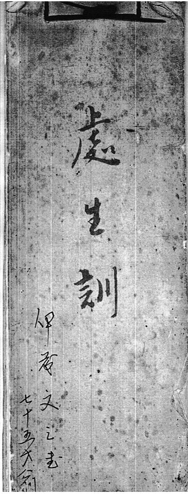
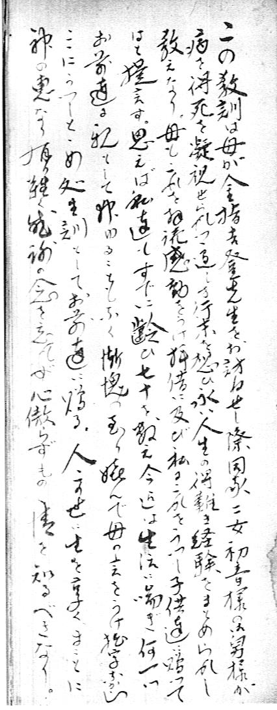
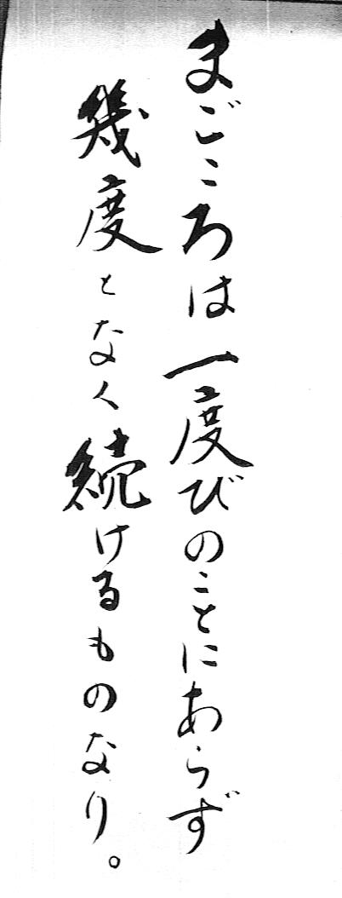

父の釣り口伝 番外編
處世訓 伊藤文三 書 七十五歳翁

この教訓は、母が金指吉登先生をお訪ねせし際、同家二女初音様の舅様が病を得、死を凝視せられつつ、行く末を想い永い人生の得難き経験をまとめられし教えなり。母もこれを拝読後感動を受け、拝借に及び私はこれを写し子供達に贈ってはと提言す。思えば私達もすでに齢ひ七十を数え、今迄は生活にあえぎ何一つお前達に親として教ゆることもなく慚愧の至り、喜んで母の言をうけ、握字なからん。ここにうつしとどめ処世訓として、お前達に贈る。人、この世に生をうく、まことに神の恵みなり。有難く感謝の念を忘れず、心傲らずものの情けを知るべきなり。

○ すぐれて成功する商人は、笑って損する度胸を持つ。
○ いい私も必要はない。悪い私も必要ない。
わたしというのは渡しだから、天にわたすだけである。
○ 新しい友は、新しいぶどう酒。古くなったときに、飲み味がよくなる。
○ 多くを知って行わぬより、少なく知って実行するがよい。
○ ハイの返事で その人のすべてが わかる。
○ 幸福な日には不幸を忘れるな。不幸な日には、幸福を忘れるな。
○ 一時に 一事を 一心に
○ 床の間のみ知りて 便所を知らざる人は禍なるかな。
○ してやったことは忘れ、してもらったことだけを覚えていればよい。
○ 人が茶碗を投げつけたら、真綿でお受けなさい。
○ よいつぼみであれ よい花になる。
○ よい花であれ よい実になる。
○ 親に心配をかけただけ 子供が心配をかける。
○ 人が死ぬ前に、幸福な人だというな、
人がわかるのは、その子を見てからである。
○ 心の快活は、よい血を造り 魂の憂いは、骨を干しあがらせる。
○ 人は信用が 真の財産。
○ まごころは一度びのことにあらず 幾度となく続けるものなり。

○ 雲があって日月がおもしろい なやみがあって人生は味がある。
○ 朝日を拝み、一滴の水にも感謝のできる人が真の長者。
○ 不幸 病気 逆境は 大成する人格を育てる落葉である。
○ 思うやうにならぬときこそ 顔をしかめるな。
○ 平和に一握りのものを持つほうが、
精神の苦悩をもって両手いっぱいに持つよりもいい。
○ 失敗の種は 成功の日にまく。
○ 松茸は美しい緑の葉からは生まれない。落葉のくさった中から生まれる。
○ 相対立するものは敵ではない、
自分の足らないところを補ってくれる味方である。
○ 失敗をかばう人は友情を得、失敗をあばく人は友を遠ざける。
○ 目は心の窓 口は心の声 顔は心の掲示板。
○ 眼は前へ 前をみよとて 前につく。
○ たよるな たよっただけその人より遅れる。
○ 生かしてくださる力を仰ぎ、与えてくださる恵みを喜ぶ。
○ ほんとうの休みのうれしさは すばらしい忙しさから生まれる。
○ 評判がよいのは、多くの富にまさり、好意を持たれるのは、金や銀にまさる。
○ 徳のある人は 心を濁すと毒になる。
○ 頭の生活はゆきづまる、腹の生活でなくてはいけない。
○ 穴を掘る者はみずからその中に落ち、石は投げた人に返ってくる。
注：この処世訓は、伊藤肇の父である伊藤文三（明治36年：1903年生まれ）が、妻すなわち肇の母である伊藤みなの発案で、自分の子供達：肇、進、収、敬、京子、滋、豊という６男１女のために残した小冊子です。北設楽郡東栄町にある実家を片付けた際に、奥の間に掲げられてあったのを私、伊藤剛が持ち帰り、父の釣り口伝の番外編として掲載しました。文三がこれを書いたのは、1978年ですので、私が高専１年生の時のことです。
処世訓の現物は、祖父が毛筆で手書きした原稿を、青焼き（ジアゾ式複写機）でコピーして綴り紐で綴じたＢ４の半分くらいの大きさの冊子です。ホームページの記事になって活字で表すと、長年毛筆の書を習っていた祖父の達筆な字体が失われて味気ないのですが、内容は今も十分に生きて輝いていると思います。
父の釣り口伝 目次へ
サイトマップ
ホームへ
お問い合わせ